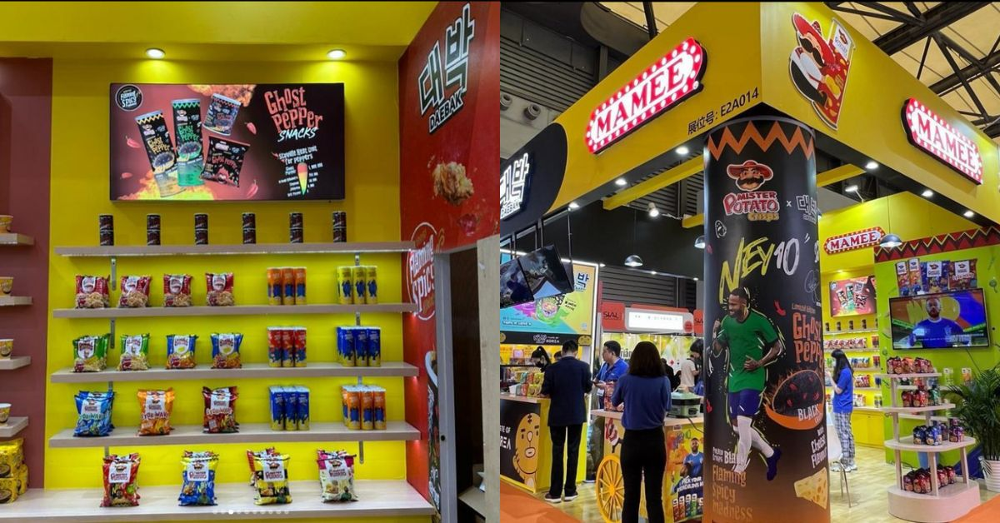
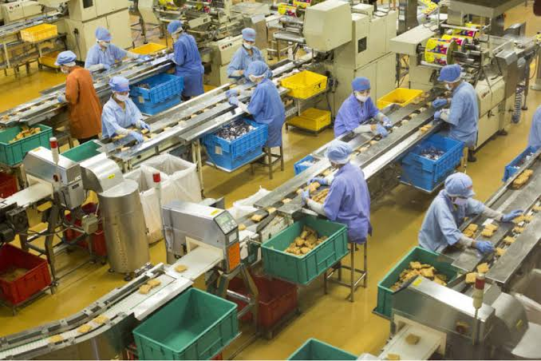

01
Business growth
MIDA reported that MAMEE doubled business revenue and profit from 2019 to 2023, reaching RM1.5 billion in revenue in the 2024 report.
MIDA reported that MAMEE doubled business revenue and profit from 2019 to 2023, reaching RM1.5 billion in revenue in the 2024 report.

MIDA reported exports to more than 80 countries and highlighted growth in markets such as the US and Europe.

The company expanded from early instant noodles into snacks, potato crisps, noodles and other food categories.

Consumer observation, focus groups and market research became part of MAMEE's documented innovation approach.

Technology integration and the 2024 production-facility investment support capacity and efficiency as MAMEE grows.

Partnerships and investments enabled MAMEE to access niche, premium and healthier-product segments.
MAMEE developed physical and digital brand experiences, including Mamee Jonker House and social-media-led product experiences.
Analytically, the case shows that long-term competitiveness came from repeatedly adapting products, markets and operations.
The case demonstrates that creativity can start with something very simple: noticing a behaviour, questioning an existing product, and seeing an opportunity that others may overlook. MAMEE then built on that mindset through research, product development, partnerships, international expansion and technology.